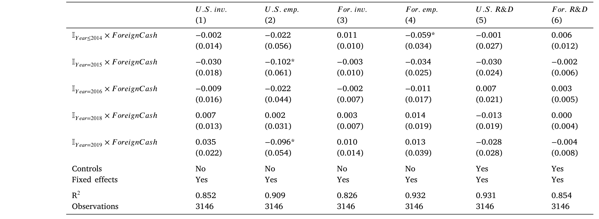
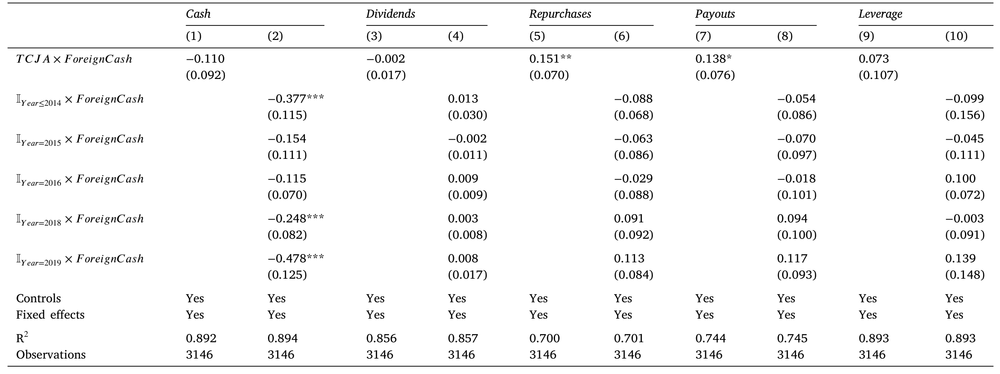
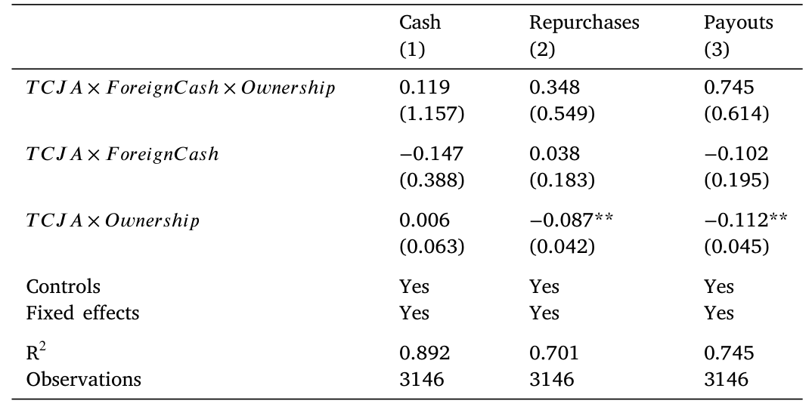
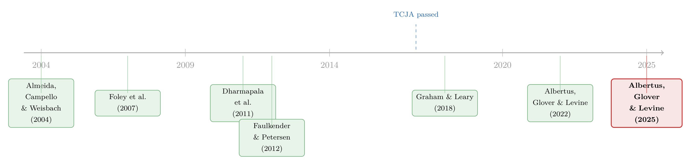

一万七千亿美元的「自由现金」，被花到哪里去了？
本文细读 Albertus, Glover & Levine (2025, Journal of Financial Economics)。2017 年底通过的减税与就业法案（Tax Cuts and Jobs Act, TCJA）一举解封了美国跨国公司滞留海外、规模高达 1.7 万亿美元的「被困现金」。理论与政策倡导者都预期这笔零边际成本的内部流动性会涌入美国本土，转化为投资与就业。然而作者用 BEA 的保密数据做双重差分，发现：企业的资本开支、工资、研发、并购几乎纹丝不动，无论它们是否受到融资约束；在财务一侧，每解封一美元海外现金，只有约 30 美分派给股东（且主要是回购），而近 48 美分被重新囤积为现金。更耐人寻味的是，这种高留存与治理好坏无关——它很难用传统的预防性储蓄理论来圆。
1 引言：一个被反复许诺的故事
每隔十几年，美国的政策辩论里就会冒出同一个诱人的故事：美国的跨国公司在海外子公司里囤积了一大笔现金，只因为一道高高的「汇回税」（repatriation tax）城墙，这笔钱无法回家。倘若拆掉这道墙，钱就会像开闸的水一样涌回美国，变成工厂、岗位与研发。
这个故事在 2017 年达到了它最盛大的一次上演。苹果 CEO 蒂姆·库克曾公开抱怨旧税制的荒诞：「如果你在全球赚了钱，除非缴上 35% 再加上州税，否则没法把它带回美国。你看着这一切，会觉得『这有点离奇』。」（CNBC, 2017）而特朗普的经济顾问则在《纽约时报》上承诺，解封海外现金将「把超过两万亿美元吸引到我们的海岸，为财政部带来数十亿收入，同时创造新的就业」（Forbes et al., 2017）。
诚然，故事讲得动人。问题在于，它从未被干净地检验过。原因很简单：要检验它，你需要知道每一家公司究竟在海外囤了多少现金——而这恰恰是公开数据（如 Compustat 的地区分部文件）最缺失的一块。于是，一个本该被严格识别的因果问题，长期停留在「轶事 + 加总统计」的层面。
这篇论文做的，就是把这个故事拉到实验台上，第一次用一把足够锋利的尺子去量它。它的答案，几乎和那个流传了几十年的故事完全相反。
2 那把锋利的尺子：识别策略
要理解这篇论文为什么可信，得先理解 TCJA 这个自然实验的精巧之处，以及作者拿到了一份什么样的数据。
先说政策。TCJA 在汇回税上做的事，可以一句话概括：强制、一次性地解封所有此前未汇回的海外利润。具体而言，旧制度下企业只要把利润留在海外子公司、不用于美国投资或股东分红，就能无限期递延那笔 35% 的汇回税；TCJA 则对所有累积海外利润征收一次性的「过渡税」（transition tax），海外金融资产的税率仅为抵免前的 15.5%，远低于此前的（自愿）汇回税率，并且取消了未来的汇回税。换句话说，法案落地的那一刻，企业突然以零边际成本获得了一笔此前极其昂贵才能动用的内部资本。
这里有一个对识别至关重要的细节：解封是强制的、对所有公司一视同仁的。这一点把它和 2005 年的美国就业创造法案（American Jobs Creation Act, AJCA）干净地区分开来——后者是一次自愿的汇回税假期，企业自己决定要不要把钱搬回来，于是天然带着内生的选择效应（endogenous selection）。TCJA 没有这个问题：你被解封多少，不取决于你想不想，只取决于你过去攒了多少海外现金。
再说数据。本文的真正稀缺资源，是一位作者获准使用的、由美国经济分析局（Bureau of Economic Analysis, BEA）维护在政府保密服务器上的《美国跨国企业活动调查》。这份数据分别记录了跨国公司国内与海外业务的损益表和资产负债表，可以精确量出每家公司在海外子公司里持有的现金与有价证券（下称「海外现金」）。这正是公开数据给不了的东西。
有了这两块拼图，识别策略就顺理成章了。作者做的是一个双重差分（difference-in-differences, DiD）：处理强度（treatment intensity）是企业在改革前持有的海外现金（Foreign cash，按合并资产标准化，样本均值 0.050，即约占合并资产的 5%、占总现金的三分之一）。因为这个冲击是公司层面、连续取值的，作者可以在回归里同时放入：
- 公司固定效应，吸收掉不随时间变化的公司异质性；
- 行业×年份固定效应，这一步尤其关键——它把 TCJA 其他条款（比如把公司所得税率从 35% 降到 21%）带来的、所有同行业公司共同经历的冲击全部吸收掉，从而把「解封海外现金」这一条孤立出来。
样本从 2010 年开始（避开金融危机的尾声、又保留若干改革前年份），基准样本到 2019 年止（BEA 数据的最后一年），共 3146 个公司—年观测、489 家独立公司；对依赖合并（Compustat）口径的分析则延长到 2021 年。作者还展示了处理前投资与分红的平行趋势，并对一个最自然的内生性担忧——「海外现金多的公司，可能也是 TCJA 未来投资机会改善更多的公司」——做了正面回应：他们构造了一个基于各公司海外利润来源的 TaxGap（美国法定税率减去销售加权的海外法定税率，均值 10.5%）作为投资机会变化的代理变量，加入后结果不变。更重要的是，作者点出这种遗漏变量偏误只会高估真实效应，而他们恰恰什么效应都没找到——这反而让结论更稳。
3 第一幕：钱没有变成工厂
带着这把尺子，第一个、也是政策最关心的问题是：真实投资动了吗？
答案干脆利落——没有。海外现金的增加，没有带来资本开支（capital expenditure）、工资支出（wage expense）或研发（R&D）的任何变化；海外的真实经营活动同样没有反应。
而真正让这个「零」变得有分量的，是它的异质性检验。标准理论会说：好吧，也许平均没反应，是因为大多数公司本就不缺钱；但那些真正受融资约束（financially constrained）、或存在代理冲突（agency conflicts）的公司，拿到这笔钱总该多投了吧？作者于是按 Hadlock-Pierce 约束指数、按治理强弱、甚至按「行业是否更便于自愿利润转移」分别切开样本——结果，最受约束的公司和最不受约束的公司反应没有差别；治理好与坏的公司也没有差别。

Table 5: Robustness of real effects.
这一步非常重要。它意味着「钱没变成投资」不是因为统计噪声盖住了某个躲在角落里的约束子样本，而是一个普遍的现象：流动性的缺乏，本来就不是这些公司真实决策的约束。沿着同一逻辑，作者接着问并购（M&A）——按理说，更便宜的资本（Myers, 1984）或更严重的代理问题（Jensen, 1986）都会推高并购，而既有文献（Harford, 1999, 2005）也确实表明流动性是并购的重要驱动。但结果依旧：无论美国境内还是海外，无论治理强弱，并购活动都没有对这笔解封的现金做出反应。
于是政策叙事的前半段就这样塌了：解封被困现金，几乎可以肯定没有像倡导者预言的那样刺激美国的投资与雇佣。
4 第二幕：那钱总该发给股东了吧？——真正的谜题
讲到这里，一个自然的反问浮现出来：既然这些公司既不缺钱、治理也不差，那按照金融学最经典的逻辑，它们就应该把这笔用不上的钱还给股东啊。
这正是预防性储蓄理论（precautionary savings theory）的清晰预言。对一家财务上不受约束的公司——无论是因为现金多还是外部融资便宜——流动性的边际价值趋近于 1：股东眼里，一块钱放在公司内部和揣进自己兜里是一样的（Riddick and Whited, 2009；Bolton, Chen and Wang, 2011）。再加上持有现金本身还有成本（代理成本、持有成本），那么任何多出来的流动性，理应被派出去。经验证据也站在这一边：Almeida, Campello and Weisbach (2004) 发现不受约束的公司不会留存现金流入；而在 2005 年 AJCA 那次，Dharmapala et al. (2011) 算出被解封的汇回资金里有高达 92% 流向了股东分红、而非留存为现金。
那么 TCJA 这一次呢？
答案是本文最反直觉、也最核心的一击：每解封一美元海外现金，只有约 30 美分派给了股东（且主要以股票回购的形式），与此同时，合并现金持有减少了约 48 美分——也就是说，近一半的解封现金被重新囤积成了现金留在公司里。此外，企业的杠杆没有显著变化，说明它们也没拿这笔钱去还债。

Table 11: Financial response.
把这两幕拼起来，谜题就成形了：一批看上去既不缺钱、又治理良好的公司，拿到一大笔零成本的内部流动性，既没有用它做实事，也没有把它还给股东，而是原封不动地把一半囤了起来。这种「低分红、高留存」的组合，很难用传统的预防性储蓄动机去解释——按那套理论，这些公司根本没有理由把现金留下。
（关于「公司为什么要囤现金、囤的现金又该如何估值」这个更大的母题，可参见我之前写的《为风险买单：企业为什么把现金存进高风险债券？》。）
5 第三幕：逐一排除「无聊的解释」
一个好的实证作者，不会满足于抛出一个谜题就收手。本文接下来最见功力的部分，是系统地把所有「无聊的」解释逐一关掉，从而把谜题逼到墙角。
解释一：海外现金是为经营而留的，根本不算「被困」。 也许那些现金本来就是子公司日常运营所需，谈不上被税收锁住。作者于是只把超出支持海外经营所需的那部分海外现金当作冲击重新度量——结果几乎一样。可见微弱的反应并非因为把「运营用现金」误算进了处理变量。
解释二：经理人为了控制权私利而留存现金（代理冲突）。 这是金融学里对「现金囤积」最经典的怀疑。但本文的检验给出了清晰的否证：治理好的公司，减少现金、增加分红的幅度，和治理差的公司没有差别。如果留存是代理问题驱动的，好治理本该逼出更多的派现，而数据里没有这种迹象。

Table 13: Agency conflicts and financial response.
这一步对全文的逻辑分量极重。它意味着——与 Harford, Wang and Zhang (2017) 和 Albertus, Glover and Levine (2022) 所强调的「海外现金背后藏着代理冲突」那条线索相比——在这次解封中，作者找不到代理冲突在唱主角的清晰证据。
解释三：调整需要时间，两年的窗口太短。 也许企业只是慢热，再给两年它们就会把现金派出去。作者把样本延长到 2021 年——结果，现金持有的下调、股东分红的抬升，都没有在改革两年后继续发生。
三条「无聊的解释」全部关掉之后，谜题就被牢牢钉死了：低分红、高留存，既不是为经营而留、也不是代理冲突、更不是调整滞后。
6 那么，到底该怎么解释？
作者很克制，没有强行给出一个「正确答案」，而是提出了几个能与证据共存的视角——这种诚实恰恰是本文的优点。
第一种，借用 Graham and Leary (2018) 的说法：企业其实只是「松散地」（loosely）盯住自己的现金目标。Graham and Leary (2018) 发现，现金持有时间序列里大约有一半的变动，可以由当期现金流和投资支出解释，这与现金只做部分调整、而非时刻回到最优目标的图景一致。这其实和 Welch (2004) 记录的「市场杠杆受到冲击后企业几乎不主动调整」遥相呼应。不过作者也坦白：杠杆的迟钝可以用调整的固定成本（Fischer et al., 1989）来解释，但现金不一样——把多余现金派出去并不特别昂贵，所以「调整成本」对现金这条路走不通。
第二种，或许更深刻：对这批公司而言，改革之后最优现金持有量近乎不确定。因为持有现金的边际成本（持有成本、代理成本）和边际收益（预防性价值）此时都很小——公司所得税率下调让留存现金更便宜，低利率又压低了持有成本。换言之，企业当年有强烈的税收激励去累积现金（为了躲避汇回税），但改革之后并没有什么有说服力的理由要把现金降下来。这会表现为一个「松散的现金目标」，却仍然与预防性储蓄理论自洽。还有一种可能：现金本身充当了企业借贷的某种抵押品（Gao et al., 2021 指出现金能降低违约概率、提高违约回收率，从而压低借贷成本），这种作用在现金被解封后依然存在，使得「全额派出」未必最优。
这些解释指向同一个更大的图景：本文与 Bates, Kahle and Stulz (2009) 以来「美国企业现金为何越攒越多」的长期之谜直接相连。一方面，企业确实因汇回税的取消而下调了现金，印证了税收激励对现金累积的贡献；另一方面，下调的幅度如此温和，又暗示着税收之外的因素对理解过去二十年的现金之谜同样重要。从这个角度看，本文与 Pinkowitz et al. (2016) 的判断不谋而合——汇回税解释美国企业高额现金的能力其实有限。
（如果说预防性储蓄理论的支点是「一块钱内外等值」，那么近年一批文献正是从「钱并不总是可替代的」这个角度去松动它；关于这个主题，可参见《钱的温度：当「一块钱永远等于一块钱」不再成立》。）
7 文献脉络
把这篇论文放回它所在的研究河流里，脉络会清晰很多。
源头是企业流动性与现金持有的两条经典线索。一条是「现金的现金流敏感性」——Almeida, Campello and Weisbach (2004) 奠基性地区分了受约束与不受约束的公司，并指出后者不会留存现金流入；这正是本文反复对照的理论基准。另一条是「被困现金」的制度根源——Foley et al. (2007) 揭示了正是汇回税激励催生了海外现金的累积。

往下，2005 年的 AJCA 提供了第一次准实验。围绕那次自愿汇回税假期，文献产生了著名的分歧：Dharmapala et al. (2011) 估计每一美元增量汇回里多达 92 美分变成了股东分红、且对真实投资（即便在受约束公司中）没有影响；而 Faulkender and Petersen (2012) 则发现分红的增幅很小甚至不显著，真实投资反而在受约束公司中上升了。两者之所以打架，关键就在于 AJCA 的自愿参与带来的选择效应难以处理。
再往后，Graham and Leary (2018) 系统刻画了美国企业现金的演化，并提出「松散盯住现金目标」的观察；Albertus, Glover and Levine (2022) 则用 BEA 数据研究海外投资中的税收与代理冲突，为本文铺好了数据与方法的路。
本文（Albertus, Glover and Levine, 2025）就站在这个交汇点上：它用 TCJA 这个强制、公司层面的冲击绕开了 AJCA 的选择效应，用 BEA 的保密数据绕开了公开数据的盲区，第一次干净地量出了「解封被困现金」的真实与财务后果——并给出了一个与既有理论都不太合拍的「高留存」之谜。
8 我的评述：贡献、隐忧与下一步
先说贡献。这篇论文最大的价值，在于它把一个被政策辩论反复消费、却从未被严格识别的问题，用一份别人拿不到的数据 + 一个设计干净的自然实验，给出了一个否定性的、但极其有信息量的答案。否定性结果往往难发，但这篇之所以有分量，恰恰因为作者把「零」做实了：连续的处理强度、公司与行业×年份双固定效应、平行趋势、对内生性方向的论证（偏误只会高估、而他们什么都没找到），再加上对所有「无聊解释」的逐一排除。读完你会相信，这个「钱没花出去」不是数据噪声，而是一个真实的经济现象。我尤其欣赏第 5 节那种「把谜题逼到墙角」的写法——这是好实证该有的样子。
再说对识别的隐忧。第一，也是最根本的，外部效度。样本是 489 家有海外子公司、且至少有一个低税国子公司的大型跨国公司——它们几乎按定义就是「不缺钱、治理不差」的一类。所以「不受约束的公司不把流动性派出去」这个结论，可能更多是关于这一类公司的陈述，而未必能外推到更广的企业群体。第二，处理变量与投资机会的纠缠虽被 TaxGap 控制缓解，但 TaxGap 终究是个代理变量；「偏误只会高估」这一论证很聪明，可它依赖「真实效应非负」的先验，逻辑上不是铁板一块。第三，回购的口径。30 美分主要来自回购，而回购对税制变化（以及同期其他 TCJA 条款）高度敏感，行业×年份固定效应能吸收行业共同冲击，却未必能完全剥离与海外现金相关的、跨行业的回购倾向差异。
最后，下一步我想看到什么。其一，把「松散现金目标」这个解释结构化：能不能写下一个含调整摩擦或目标不确定性的现金动态模型，让它同时匹配「真实投资零反应」与「一半留存」这两个矩，并反过来识别出持有现金的隐性收益有多大？其二，异质性再往里钻一层：哪些公司确实把钱派了出去？把派出 vs. 留存的公司在债务结构、抵押品需求、信用利差上做横截面对比，或许能直接检验「现金作为借贷抵押品」那条解释。其三，顺着信用市场和外资持有人这条我自己更关心的线，去问一个相邻的问题：这笔被囤起来、却没有派出的现金，是否改变了这些公司在债券市场上的定价与流动性？这恰好把本文的「财务一侧」接到了更广的资本市场后果上。
评论与延伸（Q&A + 研究方向）
几个可能的疑问
Q：这篇的「企业没把钱花出去」，和媒体当年报道的「TCJA 后回购创纪录」矛盾吗？
不矛盾，反而是同一枚硬币的两面。本文说的是相对于被解封的海外现金这个分母，分红只占约 30 美分、留存近 48 美分。回购在绝对量上确实大增（这与 Chetty and Saez, 2005、Yagan, 2015 关于分红税率下降推高派现的发现一致），但相对于「钱本可以全派出去」的理论基准，这个派出比例其实偏低。谜题在于留存的那一半，而不在派出的那一部分。
Q：和 2005 年 AJCA 的研究比，这篇凭什么更可信？
核心是识别。AJCA 是自愿汇回税假期，参与与否是企业自选的，于是 Dharmapala et al. (2011) 与 Faulkender and Petersen (2012) 即便用同一事件也得出相反结论，根子就在如何处理选择效应。TCJA 的解封是强制、对所有公司一视同仁的，没有「要不要参与」的内生选择；再加上 BEA 的公司层面海外现金数据，处理强度可以连续度量，这是 AJCA 研究当年没有的奢侈品。
Q：「不受约束的公司不派现」会不会只是因为样本里的公司根本不缺投资机会，所以钱多钱少都一样？
这正是作者用
TaxGap想堵的洞。担忧是「海外现金多的公司恰好也是 TCJA 后投资机会改善更多的公司」。但请注意识别逻辑：这种遗漏变量会让估计高估真实的投资反应，而作者什么反应都没估到。也就是说，即便存在这种偏误，真实效应只会比「零」更接近零。这是个方向性论证，挺有力，但前提是真实效应非负。
Q：留存一半现金，难道不正是「经理人爱囤钱」的代理问题铁证吗？
直觉上像，但数据不支持。如果是代理驱动，治理好的公司应被股东逼着多派、少留；而本文发现好治理与差治理公司的现金下调和分红抬升幅度相同。这与 Harford, Wang and Zhang (2017) 强调的海外现金代理冲突形成对照——至少在这次解封里，代理冲突不是主角。
Q：那作者到底信哪种解释？
作者很克制，没押注。他们更倾向「最优现金量近乎不确定 + 松散盯住目标」：改革后持有现金的边际成本和边际收益都很小，企业既无强烈理由继续囤、也无强烈理由派出，于是表现为对冲击的部分调整（呼应 Graham and Leary, 2018 与 Welch, 2004）。一个有意思的补充是现金的抵押品价值（Gao et al., 2021），它能解释「为什么不全额派出」。
Q：这对「美国企业现金为什么越来越多」这个老问题意味着什么？
双向的。企业确实因汇回税取消而下调了现金，说明税收激励真的在推高现金累积；但下调幅度之温和，又说明税收远不是全部——这与 Pinkowitz et al. (2016) 「汇回税解释高现金的能力有限」的判断一致，也把 Bates, Kahle and Stulz (2009) 之谜的一部分重新摊回桌面。
几个可能的研究问题与提案
1. 被囤起来的现金，如何影响这些公司的债券定价与流动性？ - 经济故事：本文止步于「现金留在了公司里」，但没追问它在资本市场的后果。如果现金真如 Gao et al. (2021) 所言充当抵押品、降低违约风险，那么 TCJA 后海外现金被解封但留存较多的公司，其信用利差应当收窄、债券二级市场流动性应当改善。这把「财务一侧」延伸到了信用市场。 - 可行性：中。处理强度可沿用本文思路（用公开的永久再投资收益或累积海外利润代理海外现金），结果端用 TRACE 的公司债交易数据构造利差与流动性指标，做同样的 DiD。难点是没有 BEA 保密数据，处理变量会更糙；但识别框架现成、数据公开，doable。
2. 外资持有人结构是否中介了「派出 vs. 留存」的选择？
- 经济故事：不同股东对现金的偏好不同。机构集中度高、或外资持股高的公司，可能更倾向把解封现金派出（回购对税收敏感的边际股东尤甚）。本文已有 Ownership（前 5 大机构持股）变量，但只当控制项；把它推到机制前台，能检验「谁在决定钱的去向」。
- 可行性：中高。FactSet/13F 的机构持股数据公开，可在本文样本或其公开代理样本上做横截面异质性回归。识别上仍是 DiD 的交互项，诚实地说，因果解读会弱一些（持股结构本身内生），但作为机制证据有价值。
3. 「最优现金量不确定」能否被结构化并量化出隐性持有收益？ - 经济故事：作者口头提出「边际成本与边际收益都很小，故现金量近乎不确定」。这是个可以写下来的命题。一个含调整摩擦/目标带（target band）的现金动态模型，应同时匹配「真实投资零反应」与「约一半留存」两个矩，并反推出持有现金的隐性收益区间。 - 可行性：中。理论侧可在 Riddick and Whited (2009)、Bolton, Chen and Wang (2011) 的现金动态框架上扩展；校准用 Compustat 加总现金即可。难点是把 TCJA 冲击干净地映射进模型的状态变量，识别隐性收益需要较强的函数形式假设——能做，但结论对设定敏感。
4. 跨国并购的「非反应」与既有发现的张力，值得专门拆解。 - 经济故事：Hanlon, Lester and Verdi (2015)、Edwards et al. (2016) 曾指出被困现金推高了（且拉低了公告收益的）海外并购。本文却发现解封后并购没有反应。一个干净的问题是：被困现金推高并购，究竟是「钱多了想买」还是「税收锁定迫使把钱用在海外」？解封恰好能区分这两种机制。 - 可行性：中高。SDC/FactSet 的并购数据公开，事件研究法成熟，可直接在本文框架下对比改革前后的并购倾向与公告收益。识别清晰，是个 doable 的扩展。
参考文献
- Albertus, J.F., Glover, B., Levine, O. (2022). Foreign investment of US multinationals: The effect of tax policy and agency conflicts. Journal of Financial Economics 144, 298–327.
- Albertus, J.F., Glover, B., Levine, O. (2025). The real and financial effects of internal liquidity: Evidence from the Tax Cuts and Jobs Act. Journal of Financial Economics 166, 104006.
- Almeida, H., Campello, M., Weisbach, M.S. (2004). The cash flow sensitivity of cash. Journal of Finance 59, 1777–1804.
- Bates, T.W., Kahle, K.M., Stulz, R.M. (2009). Why do US firms hold so much more cash than they used to? Journal of Finance 64, 1985–2021.
- Blouin, J., Krull, L. (2009). Bringing it home: A study of the incentives surrounding the repatriation of foreign earnings under the American Jobs Creation Act of 2004. Journal of Accounting Research 47, 1027–1059.
- Bolton, P., Chen, H., Wang, N. (2011). A unified theory of Tobin's q, corporate investment, financing, and risk management. Journal of Finance 66, 1545–1578.
- Chetty, R., Saez, E. (2005). Dividend taxes and corporate behavior: Evidence from the 2003 dividend tax cut. Quarterly Journal of Economics 120, 791–833.
- Dharmapala, D. (2014). What do we know about base erosion and profit shifting? A review of the empirical literature. Fiscal Studies 35, 421–448.
- Graham, J.R., Leary, M.T. (2018). The evolution of corporate cash. Review of Financial Studies 31, 4288–4344.
- Gu, T. (2017). US multinationals and cash holdings. Journal of Financial Economics 125, 344–368.
- Hadlock, C.J., Pierce, J.R. (2010). New evidence on measuring financial constraints: Moving beyond the KZ index. Review of Financial Studies 23, 1909–1940.
- Hanlon, M., Lester, R., Verdi, R. (2015). The effect of repatriation tax costs on US multinational investment. Journal of Financial Economics 116, 179–196.
- Harford, J. (1999). Corporate cash reserves and acquisitions. Journal of Finance 54, 1969–1997.
- Harford, J. (2005). What drives merger waves? Journal of Financial Economics 77, 529–560.
- Harford, J., Wang, C., Zhang, K. (2017). Foreign cash: Taxes, internal capital markets, and agency problems. Review of Financial Studies 30, 1490–1538.